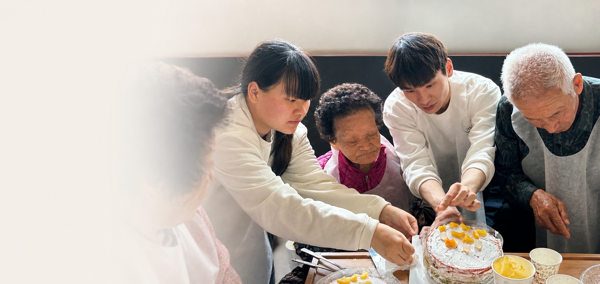

AI Healthcare PM | Data Scientist | Founder
JEONG Se-jun
Looking to expand into Asia while bringing on a multidisciplinary technology leader?
About
Data, healthcare & human behavior.
I am a data-driven problem solver with a deep passion for databases, healthcare, and social impact. My personal experience with lymphoma and hyperthyroidism led me to recognize the fundamental importance of health in human life.
I work at the intersection of healthcare, data science, public policy, and human behavior, focusing on aging populations, chronic disease management, digital health innovation, and social welfare data.
My experience spans public administration, public enterprises, nonprofit leadership, research, and technology entrepreneurship. Personal illness and the loss of family members to cancer have strengthened my commitment to healthier aging and accessible care.
"Leading the future of healthcare through AI and data."
Expertise
A practical stack for healthcare AI products.
Product Management
5 + 1Service strategy, business models, stakeholder leadership, and data-driven decisions.
Database
5 + 1MySQL, PostgreSQL, MongoDB, SQLAlchemy, public-sector and healthcare database analytics.
Data Science
5EDA, visualization, hypothesis testing, OLS regression, feature engineering, and XAI.
AI Engineering
3Python, PyTorch, CNNs, FastAPI, Docker, data pipelines, model deployment, and explainable AI.
Public Data & Social Impact
Public data, grounded in social welfare.
Addiction-related data
Handled data concerning middle-aged and older adults, connecting behavioral health data with field-level public service contexts.
Veterans affairs data
Worked with veterans affairs data linked to public administration, policy context, and responsible data management.
Gerontechnology
Studied the intersection of aging, social welfare, care technology, and digital innovation in a BK research group.
Gachi+ app and DB analysis
Led National Data Office DB analysis projects and app development for AI and digital literacy gap reduction.
Language Proficiency
Communication across Asian markets.
Korean
⭐⭐⭐⭐⭐ + ⭐Native Speaker
- Policy, research, and business document writing
- Public speaking and presentation experience
- Government agency and private-sector project collaboration
KBS 한국어능력시험
Japanese
⭐⭐⭐⭐Business-level communication
- Professional presentations and collaboration in Japanese
- Technical and academic material utilization
- Market research and business development in Japan
- Partnership building with Japanese stakeholders
JLPT N1
English
⭐⭐⭐⭐Global business and technical communication
- AI and Data Science technical documentation
- Academic research and literature review
- International project collaboration
TOEIC 930+
OPIc IH
TOEFL iBT 100+
Chinese
⭐⭐Everyday and basic business communication
- Everyday conversational communication
- Basic business expressions
- China market research and industry trend analysis
HSK Level 4
Experience
Experience across sectors.
Member, National Industry-Academia-Research Cooperation Committee
AI and healthcare advisory under the Prime Minister's Office, including public data and older-adult health AI platforms.
Director, AI LAB
AI healthcare, SLM, policy database mining, and product strategy.
CEO and Lead Researcher, Cheongchun Aram Policy Institute
AI literacy, digital literacy, National Data Office DB analysis, and Gachi+ app development.
Director, Toytron AI Research Institute
AI-oriented education, play, content, and product development.
Vice President, JTOY Co., Ltd.
Business operations and technology entrepreneurship in digital toys and educational products.
Staff Member, Korea Racing Authority
Busan-Gyeongnam operations and addiction-related data concerning middle-aged and older adults.
Commissioned Officer, Ministry of National Defense
Veterans affairs data and citizen service. Recognition for civil-service response and a Minister of National Defense commendation.
BK Social Welfare Workforce Development Group
Gerontechnology research at the intersection of aging, social welfare, care technology, and the Fourth Industrial Revolution.
Director of External Relations, APN Co., Ltd.
External relations and business collaboration.
Director, Korea Political Analysis Institute
Policy analysis and research leadership.
Head of Division, Gyeongnam Regional Policy Institute
Regional policy research and public-interest initiatives.
Representative, Crimate Educational Materials
Educational materials under the Korea Educational Materials Development Institute.
Research & Field Improvement
From evidence to everyday services.
Data & customer service
Policy research using addiction and at-risk population data, including Korea Racing Authority and temporary youth-shelter contexts. Combined DB analysis with citizen and customer response to address service needs.
Game-based health education
Adapted digital and health education for rural children, adolescents, and older adults. Applied Unity to educational content and older-adult cognitive games.
Educational-content design registered in 2024: No. 30-1298751.
Kkachi: integrated senior welfare
Planned the senior-welfare platform “Kkachi.” Six founding members, including myself, are building product and development skills to reduce dependence on outsourced development and respond to users directly.
Research & professional community
BrainKorea research, Gerontechnology and SSWR participation, and academic networks across SNU, KAIST, and PNU. Engagement with SILVIA Health and Cera to explore real-world applications.
Projects
2026 Projects
Smoking Behavior Data Analysis
EDA, health factor analysis, statistical validation, and insight generation.
- Python
- Pandas
- T-Test
- Chi-Square
Smoking Prediction AI Model
Preprocessing, feature engineering, Random Forest modeling, and SHAP-based XAI.
- Scikit-Learn
- Random Forest
- SHAP
Wearable Healthcare Analytics
Heart rate, body temperature, oxygen saturation monitoring, and anomaly detection.
- Python
- SQL
- MongoDB
- Pandas
Chest X-ray Pneumonia Prediction
Developed a pneumonia prediction model from chest X-rays. First place in an individual AI hackathon.
- X-ray
- CNN
- PyTorch
- Medical AI
AI Model Serving & Web Deployment
FastAPI-based AI model serving and Docker-based web service deployment.
- FastAPI
- Docker
- Model Serving
- Deployment
Na No W
Infertility factor analysis and AI development for personalized healthcare, alongside platform planning.
- ML
- Healthcare Analytics
- Product Management
Explainable Medical AI & NLP
SHAP, DiCE, and Anchor-based healthcare model interpretation and NLP-assisted search research.
- Python
- SHAP
- DiCE
- Anchor
Genomic Cancer Classification
Developed a cancer-type classification model using genetic information. Third place as a team in an AI hackathon.
- Genomic Data
- Classification
Stress Prediction & Prevention
Developed a web service focused on predicting stress and supporting prevention.
- AI
- Mental Health
- Web Service
Gandangandang
Chronic-disease prediction AI and a challenge-based web service for diabetes and hypertension management.
- Chronic Conditions
- Healthcare AI
MIND QUEST
AI-adaptive visual novel platform for early intervention in adolescent depressive symptoms.
- Mental Health
- CBT
- Human-in-the-loop
Dopamin-Go
AI self-regulation healthcare platform for youth digital overdependence and daily recovery.
- Digital Health
- AI Coaching
- PWA MVP
D1V3
Urban accessibility blind-spot dashboard using Haeundae-gu public data, N3XT prediction model, and S1GN user indicators.
- Public Data
- Dashboard
- N3XT
- S1GN
Youth Digital Self-Regulation Policy
Policy research and healthcare service proposal for building digital self-regulation infrastructure.
- Youth Policy
- Healthcare
- Research
Wanted AI Hackathon
Hackathon participation in progress.
- AI
- Hackathon
Everyone's Startup
“모두의 창업” participation in progress, supported by entrepreneurship-policy consulting and mentoring.
- Entrepreneurship
- Mentoring
AI Social Challenges Competition
“AI 사회현안해결 챌린지” participation in progress.
- AI
- Social Impact
Projects through 2025
Earlier public-interest, research, entrepreneurship, and policy projects are documented separately.
View my profile and public recordsAwards
Recognition & public impact.
Korea Talent Award
Minister of Education Award
Minister of the Interior and Safety Award
Grand Prize, Sebasi Competition (TED-style Talk)
Governor of Gyeongsangnam-do Award
Korea Volunteer Center Award
Samsung Life Insurance Chairman's Award
Presidential Commendation Presentation pending
Full Profile Summary
Profile at a glance.
한국어
주요 학력
- 부산대학교 행정학과(행정통계) 졸업
- 부산대학교 아동가족학과 졸업
- 부산대학교 일반대학원 사회복지학과 수료
IT 훈련
- KAIST AIM 수료
- AI 헬스케어 초격차 캠프(K-디지털 트레이닝) 훈련 중
- K-디지털 기초역량훈련: 유니티를 활용한 2D/3D 게임 개발 최우수 수료
- 경남디지털인재양성과정(경남디지털채움교육) 최우수(수석 공훈) 수료
- 육군 신임장교 지휘참모과정(OBC, 정보) 최우수(교육단 표창) 수료
최근 경력
- 국무총리 산하 국가산학연협력위원회 위원: AI·헬스케어·공공데이터 및 노인 건강 AI 플랫폼 사업 자문
- 정많은세상을준비하는 AI LAB Director
- ㈜제이토이 부사장
- 토이트론 AI 연구소 이사
- 한국정세분석연구소 이사
- 지방정책연구소 청춘어람 대표이사
- 경남지방정책연구소 본부 소장
- 한국교구개발원 산하 크리메이트 교구 대표
- ㈜에이피엔 대외협력 이사
- 국방부 장교
- 한국마사회 부산경남 직원
- BK 4차산업혁명 시대 사회복지인력양성단: 제론테크놀로지 연구
관련 수상
- 2025 대한민국 인재상
- 2025 사회부총리 겸 교육부 장관상
- 2024 행정안전부 장관상
- 2024 세상을바꾸는시간V 경남대회 대상
- 2023 한국자원봉사센터장상
- 2023 경상남도지사상
- 2022 삼성생명이사장상
- 국방부 장관표창 · 민원처리우수공무원
- 2026 대통령 표창(수여 예정)
자격 및 대외 활동
- 고객서비스: CS 리더스 관리사, 행정관리사 등
- 데이터: 사회조사분석사, 데이터분석 준전문가 등
- 인간발달: 보육교사, 장애영유아교사, 사회복지사 등
- 젠스파크 등 AI 앰버서더 · IT 인플루언서
- 미숙아 진단 센서 등 홍보대사 · 대한민국 인재상 수상자회 협업
- 인스타그램(팔로워 2만+)
English
Key Education
- B.A. in Public Administration (Administrative Statistics), Pusan National University
- B.A. in Child & Family Studies, Pusan National University
- Graduate coursework completed in Social Welfare, Pusan National University Graduate School (degree not awarded)
IT Training
- KAIST AIM: completed
- AI Healthcare Bootcamp (Government-Funded K-Digital Training Program): in progress
- K-Digital Basic Skills Training: Unity 2D/3D game development, outstanding graduate
- Gyeongnam Digital Talent Program (Gyeongnam Digital Chaeum Education): top graduate
- ROK Army Officer Basic Course (Intelligence): outstanding graduate, training-unit commendation
Recent Experience
- Member, National Industry-Academia-Research Cooperation Committee under the Prime Minister's Office: AI, healthcare, public data, and senior-health platform advisory
- Director, AI LAB for Preparing a Warm-Hearted World
- Vice President, JTOY Co., Ltd.
- Director, Toytron AI Research Institute
- Director, Korea Political Analysis Institute
- CEO, Cheongchun Aram Policy Institute
- Head of Division, Gyeongnam Regional Policy Institute
- Founder, Crimate Educational Materials under Korea Educational Materials Development Institute
- Director of External Relations, APN Co., Ltd.
- Commissioned Officer, Ministry of National Defense
- Staff Member, Korea Racing Authority Busan-Gyeongnam
- Gerontechnology research, BK Social Welfare Workforce Development Group for the Fourth Industrial Revolution
Awards & Recognition
- 2025 Korea Talent Award
- 2025 Deputy Prime Minister and Minister of Education Award
- 2024 Minister of the Interior and Safety Award
- 2024 Grand Prize, Sebasi V Gyeongnam Competition
- 2023 Korea Volunteer Center Award
- 2023 Governor of Gyeongsangnam-do Award
- 2022 Samsung Life Insurance Chairman's Award
- Minister of National Defense Commendation · Recognition for excellence in civil-service response
- 2026 Presidential Commendation (presentation pending)
Certifications & Engagement
- Customer service: CS Leaders certification, Administrative Management certification, and others
- Data: Social Survey Analyst, Advanced Data Analytics Semi-Professional (ADsP), and others
- Human development: childcare teacher, teacher for young children with disabilities, social worker, and others
- AI ambassador, including Genspark, and technology influencer
- Advocacy for preterm-infant diagnostic sensors and collaboration within the Korea Talent Award community
- Instagram · 20K+ followers
Vision
Building Korea's leading Gerontechnology company.
My long-term mission is to use AI and data to extend healthy lifespan and address the challenges of an aging society.
"Have you tried it?" - Jeong Ju-yung